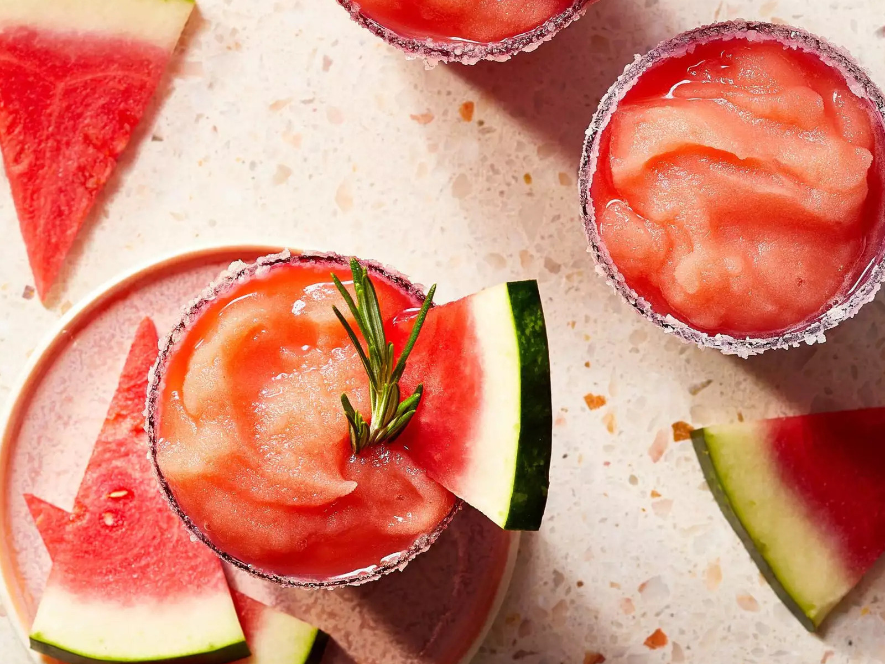

Frozen Watermelon Rosemary Margaritas

Description
This is a cocktail riff on a lemonade recipe we love (armagazine.com/rosemary-infused-watermelon-lemonade). The herb-melon combo is delicious, and watermelon's natural sweetness keeps added sugar low.
Ingredients
- water
- white sugar
- chopped fresh rosemary
- cubed seeded watermelon
- lemon juice
- kosher salt
- white sugar
- reposado tequila
- rosemary sprigs for serving
- watermelon wedges for serving
Steps
- Bring 1 cup water and 1/3 cup sugar to a boil in a small saucepan, stirring occasionally to dissolve sugar. Stir in chopped rosemary. Let steep for1 hour.
- Strain rosemary syrup into a blender. Add watermelon and lemon juice. Purée until smooth, about 30 seconds. Strain lemonade mixture, then freeze in ice cube trays until solid, 8 hours or overnight.
- Mix together salt and remaining 1 tablespoon sugar in a small shallow dish. Lightly dampen rims of 4 (12-ounce) glasses with a wet paper towel. Roll glass rims in salt-sugar mixture until coated.
- Working in batches, blend half of the frozen watermelon-lemonade cubes and 4 ounces tequila in a blender or food processor until slushy, adding 1 to 2 tablespoons of water as needed to help blend mixture. Pour into prepared glasses. Repeat with remaining watermelon-lemonade cubes and remaining tequila. Garnish with rosemary sprigs and watermelon wedges.